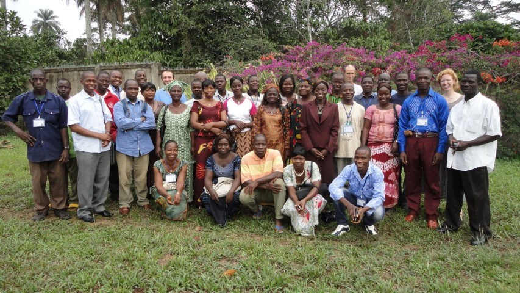

| Home | Angel House | Hope Clinic | Amazima |

Hope Clinic is a medical/surgical center in the small village of N'Zao, Guinea. The clinic is an outpost for the ships run by Doctors whithout Borders, and sees anywhere from 60-80 new patients every single day, most of whom cannot afford to pay medical bills. Jon Erickson is the founder and director of Hope Clinic, along with his wife Anja and his dearest friend, Moise.
In 2014 during the height of the Ebola virus, Jon came to America to fundraise for the clinic. While Jon was learning how to best defend his employees and his village from the virus, Moise was in the village attempting to teach people about the disease, while spraying down houses with disinfectant. The villagers thought Moise was spraying their houses with the virus. They attacked and killed Moise and 8 other people.
Talents Empowered wholeheartedly supports Jon and Anja as they continue to aid their village and honor their friend.